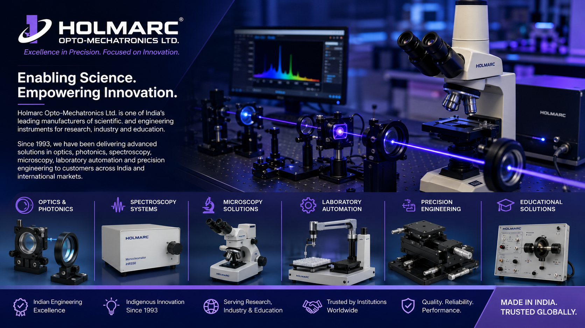

Holmarc Opto-Mechatronics Ltd. is a Kochi-based technology company and one of India's leading manufacturers of scientific and engineering instruments for research, industry, and education.
Established in 1993, the company develops advanced solutions in optics, photonics, spectroscopy, microscopy, laboratory automation, and precision engineering, serving research institutions, universities, and industries across India and international markets.
Holmarc Opto-Mechatronics has been at the forefront of scientific instrumentation and precision engineering for more than three decades. The company designs and manufactures advanced laboratory equipment, optical systems, and research instruments that support innovation across universities, research institutions, and industries worldwide.
Its commitment to quality, indigenous innovation, and engineering excellence has positioned Holmarc as a trusted partner for scientific research and technology development.
• Optics & Photonics
• Spectroscopy Systems
• Microscopy Solutions
• Precision Engineering
• Laboratory Automation
• Research Instrumentation
• Scientific Equipment Manufacturing
• Mechatronics Systems
• Optical Measurement Technologies
• Educational Laboratory Solutions
Holmarc contributes significantly to India's scientific and technological ecosystem by providing high-quality indigenous instruments that support education, advanced research, and industrial innovation.
Through continuous research and development, advanced manufacturing, and precision engineering, the company enables researchers, engineers, and students to explore emerging technologies in optics, photonics, material science, electronics, and automation.
Holmarc's products are widely used in universities, research laboratories, engineering institutions, and industrial facilities. By providing world-class scientific instruments developed in India, the company supports innovation, skill development, and scientific excellence both nationally and internationally.